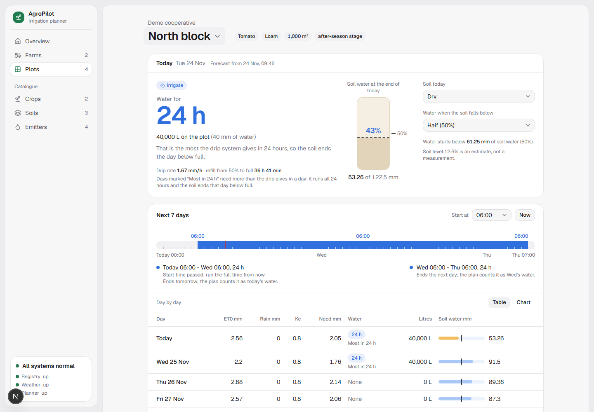
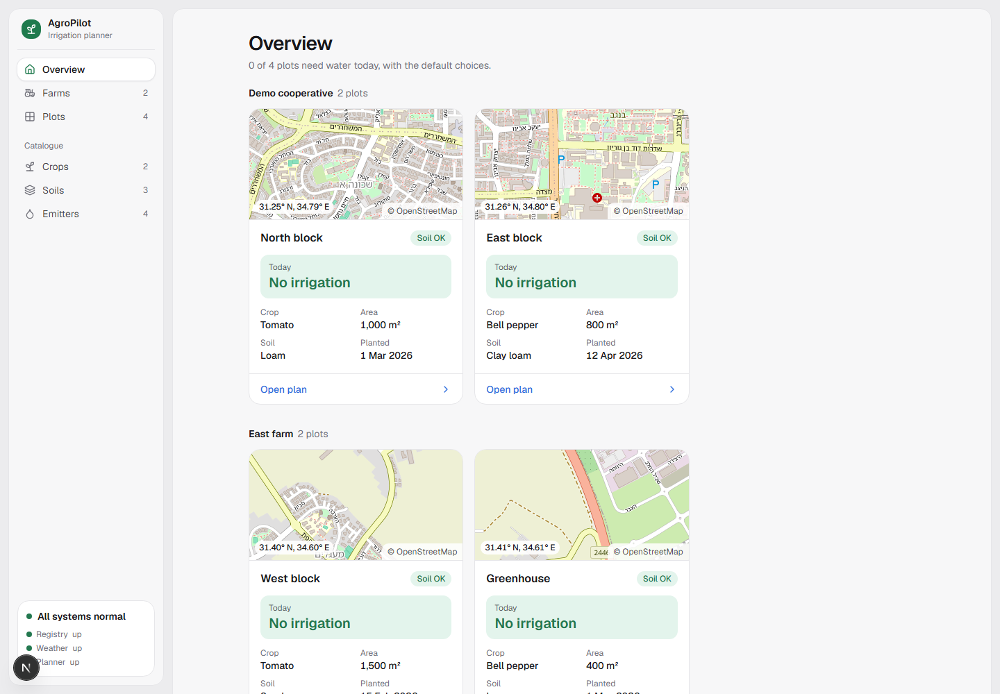

AgroPilot P2 - מדריך לראיון
מה להגיד על כל שקף, כל חלק לעומק, המספרים ומקורם, והשאלות שעלולות לעלות. נכון ל-2026-11-24, main ב-a391d8d.
1. איך להציג
- פותחים את
docs/interview/p2/slides.htmlבדפדפן. F למסך מלא, חצים או רווח כדי לזוז, Home חוזר להתחלה. מספר השקף נשמר בכתובת (#5). - 14 שקפים, בערך 15 דקות דיבור: דקה לכל שקף, ושתיים לכל אחד מחמשת שקפי החלקים (5-9).
- השקפים הם עוגן, לא טקסט לקריאה. כל ההסבר נמצא כאן.
- לפני הראיון: להפעיל את המכונה ב-AWS ולהריץ
/deploy(הוא מדפיס את כתובת ה-IP החדשה, O115), ולעדכן את כללי הפורטים 22 ו-8000 לכתובת שלך (Y32). את הכתובת להגיד בעל פה בשקף 14, או לעדכן אותה בשקף.
2. מה להגיד בכל שקף
שקף 1 - פתיחה
שקף 2 - מה ביקשו
tasks/p2.md: "Should I water this plot today, and for how many minutes?". המשתמש: מגדל עם טפטוף, שבודק כל בוקר חלקה אחרי חלקה. ארבע הדרישות: להעביר את ה-registry ל-PostgreSQL, שירות מזג אוויר, שירות תכנון, ומסך.שקף 3 - מה בנינו
DECISIONS.md וב-docs/extras.md.שקף 4 - ארכיטקטורה
no-store (src/lib/http.ts). ה-planner הוא היחיד שמדבר עם שני שירותים, וכל הקריאות שלו נמצאות בקובץ אחד, upstream.py.שקף 5 - registry
DATABASE_URL. ההפתעה הייתה ש-PostgreSQL באמת מקבילי: farm יכול להימחק בין הבדיקה שהוא קיים לבין הכתיבה של ה-plot, והלקוח היה מקבל 409 שגוי 'השם תפוס'. הפתרון: נועלים את שורת ה-farm עד סוף הכתיבה. מחיקה שמגיעה באמצע מחכה, ואז מקבלת את ה-409 הנכון, 'Farm still has plots'."שקף 6 - weather
stale: true), עד 24 שעות. אחרי זה 503 (Unavailable), אף פעם לא מספר שהמציאו."שקף 7 - planner
start_pct). בתרשים: North block היום, אדמה 'Dry', כלומר 12.5%, הוא מקבל 40 מ"מ ב-24 שעות."ואם המגדל לא יכול לגעת באדמה: לא בוחרים כלום, והתוכנית מניחה שהאדמה מלאה, כמו FAO בלי מדידה. הדף אומר זאת: "No soil level chosen: the plan assumes the soil is at field capacity." מי שיש לו מספר ממד לחות יכול להקליד אחוז מדויק (שדה "Soil water %"). הסיכון הכן: הנחת "מלא" על אדמה יבשה תדחה את ההשקיה הראשונה, וזו בדיוק הבעיה שהבחירה פותרת.
שקף 8 - frontend
שקף 9 - AWS תוספת
/deploy, ובו כל צעד הוא שער שעוצר בכישלון הראשון. בודק ש-main אצלי שווה ל-GitHub, מריץ את כל הבדיקות, מדליק את השרת אם הוא כבוי, מריץ update.sh ב-SSH, ובודק שארבעת השירותים עונים. רק אז המערכת חיה.למטה, איפה היא יושבת: שרת EC2 אחד ב-AWS, מאחורי firewall עם שלוש דלתות. 3000 פתוחה לכולם, כך שהמגדל נכנס מכל דפדפן. 8000 (ה-API) ו-SSH פתוחות רק ל-IP שלי. בתוך השרת, המערכת רצה תחת משתמש
agropilot שאי אפשר להתחבר אליו, וכל שירות קם לבד אם הוא נופל. השרת מושך את הקוד מ-GitHub בעצמו."/deploy שרץ מהמחשב שלי, עם שערים קבועים. זה עונה על אותה שאלה, "רק קוד ממוזג ובדוק עולה", אבל ההפעלה ידנית. השלב הבא הטבעי: להריץ את אותם צעדים ב-GitHub Actions על כל merge.next dev. התיקון בפרק 7.שקף 10 - תוספות
שקף 11 - בדיקות
שקף 12 - סקילים
irrigation-calc-reference הוא המפרט של ה-engine, עם המקרים שחישבתי ביד. Superpowers כתב את התכנון והתוכנית למעבר ל-PostgreSQL. השאר הם סקילים שבנינו בעצמנו כדי להריץ, לבדוק, לשבור ולפרסם."שקף 13 - הכל ביחד
- המגדל פותח את North block: דפדפן ו-frontend.
- האתר שואל את ה-registry אם החלקה קיימת, ומה שמה, הגידול והקרקע (כותרת הדף). חלקה לא קיימת: 404 (Not Found).
- המגדל בוחר שהאדמה יבשה, והאתר מבקש תוכנית מה-planner.
- ה-planner קורא מה-registry את החלקה, הגידול, הקרקע וקו הטפטוף.
- ה-planner שואל את ה-weather: עותק שמור, או קריאה חדשה ל-Open-Meteo ("Forecast from").
- התשובה של היום: להשקות 24 שעות, 40,000 ליטר.
- השבוע: מתי כל השקיה מתחילה ונגמרת.
- שורת הסטטוס: האתר בודק שכל שירות למעלה.
שקף 14 - חי
3. registry-service לעומק נדרש
דרישות: FR-2.1 (PostgreSQL ב-production, SQLite מקומית), FR-2.2 (פקודה אחת שיוצרת טבלאות ו-15 שורות seed), NFR-2.1 (מעבר בקונפיגורציה בלבד), NFR-2.2 (p95 ≤ 100ms ב-10 בקשות לשנייה, על PostgreSQL).
מה עשינו
- SQLAlchemy Core, בלי ORM (
tables.py). מנוע אחד שנבנה מ-DATABASE_URL(db.pymake_engine). - פקודת seed אחת לשני המסדים:
uv run python seed.py. היא מסרבת אם טבלה כלשהי כבר קיימת (O61), והכל בטרנזקציה אחת (O66). בדיקה משווה כל שורה ל-SQL המקורי (O67). - הבדיקות רצות על SQLite כברירת מחדל (O60). עם
TEST_DATABASE_URLכל הסוויטה רצה על PostgreSQL (O65), על מסדregistry_testבלבד. - ב-PostgreSQL: שאילתה של יותר מ-5 שניות נעצרת, וחיבור מוותר אחרי 3 שניות. שניהם כתובים ב-URL, כך שמסד תקוע הופך ל-503 תוך שניות (O64).
- שמות של 1-200 תווים, בלי NUL (O62), כי PostgreSQL לא יכול לשמור NUL, ולאינדקס ייחודי יש גבול של כ-2.7KB.
הבעיה המרכזית: farm שנמחק באמצע כתיבת plot (O63)
ב-plots.py, check_references בודקת שה-farm, ה-crop, ה-soil וה-emitter קיימים, ואז מגיע ה-INSERT. ב-PostgreSQL, בקשה מקבילה יכלה למחוק את ה-farm בין שני הצעדים. ה-foreign key היה נכשל, והשגיאה הייתה מתפרשת כ-"name taken", 409 שגוי.
הפתרון: SELECT ... FOR SHARE על שורת ה-farm. למה השם: זה השם ש-PostgreSQL נותן לנעילה הזו. "share" כי היא משותפת: כמה בקשות יכולות להחזיק אותה יחד, למשל כמה plots שנשמרים לאותו farm במקביל, ואף אחת לא חוסמת את השנייה. היא חוסמת רק מי שרוצה לשנות או למחוק את השורה, עד שכולן מסיימות. בשקף קוראים לה פשוט "lock". הנעילה מחזיקה עד סוף הטרנזקציה. מחיקה מקבילה מחכה, ואחרי שה-plot נכתב היא מקבלת 409 "Farm still has plots", התשובה הנכונה.
check_references וב-O63.למה Tech
אותו API חייב לענות אותו דבר על שני המסדים (NFR-2.1). 409 שגוי שולח את הלקוח לשנות שם, כשהבעיה בכלל אחרת.
בדיקת המפתח
tests/test_matrix.py::test_plot_write_locks_its_farm (@postgres_only). חיבור אחד מריץ check_references ומשאיר את הטרנזקציה פתוחה. חיבור שני מנסה למחוק את ה-farm עם lock_timeout = '200ms', והבדיקה מצפה ל-OperationalError על נעילה. כלומר: המחיקה באמת חיכתה.
היא רצה רק עם TEST_DATABASE_URL, ובריצה הרגילה על SQLite היא בין ה-2 שמדולגות. הבדיקה המשלימה, שרצה תמיד: test_delete_farm_while_plots_are_added. היא שולחת מחיקה ו-14 כתיבות במקביל, ומוודאת שלא נשאר plot בלי farm.
המספרים
- NFR-2.2: p95 הגרוע ביותר 5.8ms על PostgreSQL 18, 3,000 בקשות, 0 שגיאות (README של ה-registry, "Latency"). על שרת ה-EC2:
GET /v1/plotsp95 4.2ms, לפי id 4.4ms (docs/qa/2026-11-22-live-2.md). - NFR-2.1: אותה סוויטה עוברת על שני המסדים. בזמן ה-PR: 448 על SQLite, 433 על PostgreSQL (מה שבודק קובץ SQLite שבור מדולג שם).
4. weather-service לעומק נדרש
GET /v1/forecast?lat=&lon=&days=, פורט 8001. מחזיר לכל יום את התאריך, ET0 (כמה מים "צורך" דשא סטנדרטי) וגשם. FR-2.3 עד FR-2.8, NFR-2.3.
איך זה עובד
- תא רשת: lat/lon מעוגלים למטה ל-0.1°, כך ש-31.25 ו-31.29 נופלים שניהם בתא 31.2. הספק נשאל פעם אחת לתא, במרכז שלו, וכל התחזית נשמרת בזיכרון.
daysרק חותך אותה (O71). lat 90 ו-lon 180 שייכים לתא שמתחתם (A59). - טריות: 3 שעות (FR-2.5). בזמן הזה אין קריאה לספק. נעילה לכל תא, כך ששתי בקשות מקבילות לאותו תא עושות קריאה אחת (O75).
- כישלון: timeout של 3 שניות לכל ניסיון, 3 ניסיונות עם 0.5 שנייה ביניהם, בערך 10 שניות במקרה הגרוע (O73). אחר כך התחזית האחרונה עם
stale: true, לכל היותר 24 שעות אחרי שנשלפה. שולפים 8 ימים כדי שתחזית בת 24 שעות עדיין תכסה 7 ימים מהיום (O72). בלי תחזית קודמת: 503UNAVAILABLEעםRetry-After(FR-2.7). - מה נחשב כישלון: סטטוס שגיאה, גוף שאינו JSON, שדה חסר,
null, ערך שלילי, רשימות באורכים שונים (O74). וגם יחידות שאינןmm, תאריכים שאינם 8 ימים רצופים, NaN, Infinity אוtrue(A58). - גשם =
precipitation_sumולאrain_sum, כי מקלחות ושלג מגיעים לאדמה. ספירה חסרה של גשם פירושה השקיית יתר (O69). - תאריך: לפי השעון המקומי של הנקודה (
timezone=auto), אחרת בישראל התוכנית הייתה מראה את אתמול עד 02:00 (O70).
למה Business
בדיקת המפתח
tests/test_forecast.py::test_provider_down_serves_last_forecast_as_stale: בקשה ראשונה ממלאת את המטמון ב-06:00. אחר כך השעון המזויף זז 5 שעות קדימה והספק "נופל". התשובה: stale: true, fetched_at נשאר 06:00, והיום הראשון עדיין 2026-11-16. כלומר: מספרים ישנים, מסומנים בכנות.
המספרים
NFR-2.3: תחזית טרייה p95 5.7ms, 600 בקשות, 0 שגיאות (README). על EC2: p95 2.4ms. 76 בדיקות.
5. planner-service לעומק נדרש
GET /v1/plots/{id}/plan?days=&start_pct=&trigger_pct=, פורט 8002. FR-2.9 עד FR-2.14. ה-engine (engine.py) נכתב מהסקיל irrigation-calc-reference, ו-upstream.py הוא הקוד היחיד שקורא לשירותים אחרים.
הנוסחאות, צעד אחר צעד (FAO-56)
- יום בעונה: i = ימים מאז השתילה + 1 (A60).
- Kc לפי שלב (טבלאות 11/12): עגבנייה 30/40/45/30 ימים, Kc 0.6/1.15/0.80. פלפל 30/35/40/20, Kc 0.6/1.05/0.90. בשלב ההתפתחות יש עלייה ליניארית. אחרי העונה Kc נשאר בערך הסופי, והיום מסומן
after-season(O80). - עומק שורש: Zr = 0.2 + (Zr_full − 0.2) × min(i / (L1+L2), 1), עגבנייה 0.7 מ', פלפל 0.5 מ' (O77).
- הדלי: TAW = מים זמינים במ"מ למטר × Zr. הסף = TAW × (1 − trigger_pct/100), ברירת מחדל חצי.
- צריכה: need = Kc × ET0 (Kc יחיד, O81).
- גשם: נספר במלואו, חוץ מיום שבו הוא מתחת ל-0.2 × ET0, ואז נספר כ-0 (O81, A60).
- Dr בסוף היום: min(TAW, max(0, Dr + need − rain)). מה שמעל "מלא" מתנקז, והדלי לא יורד מתחת לריק (FAO Eq. 86, O99).
- השקיה: אם הדלי היה מסיים את היום מתחת לסף, ממלאים אותו באותו יום, עד מה שהטפטוף נותן ב-24 שעות (O90).
- ליטרים ודקות: ליטרים = מ"מ × שטח. טפטפות = שטח / (מרווח שורות × מרווח טפטפות). דקות = ליטרים / (טפטפות × ספיקה) × 60, מעוגל למעלה, כי עיגול למעלה אף פעם לא משקה פחות מדי (O82).
דוגמה מלאה: מקרה 1 (חישבתי ביד, references/cases.md)
עגבנייה על חול, 2026-04-14: TAW 42.69, חצי 21.34. הדלי היה מסיים ב-42.69 − 25.04 = 17.65, מתחת לחצי, ולכן ממלאים 25.04 מ"מ. זה 25,037.5 ליטר. 1,666.67 טפטפות × 1.0 ל"ש = 1,666.67 ל"ש, ו-25,037.5 / 1,666.67 × 60 = 901.35, מעוגל ל-902 דקות.
הבעיה המרכזית: כמה מלא הדלי הבוקר (Y14, O87, O88)
ה-planner לא שומר כלום (אין לו מסד). בהתחלה הוא הניח שהדלי מלא כל פעם (O76, ברירת המחדל של FAO כשאין מדידה). התוצאה: בנובמבר כמעט כל החלקות הראו "No irrigation" שבעה ימים, גם על אדמה יבשה.
הפתרון: המגדל עונה בכל ביקור בדף החלקה. השאלה היא על מה שהוא רואה ומרגיש, לפי סוג הקרקע, מתוך USDA NRCS Program Aid 1619 ("feel and appearance"): חמש שורות לכל קרקע, וכל אחת שולחת את אמצע הטווח שלה, 12.5 / 37.5 / 62.5 / 87.5 / 100 (src/lib/soil-feel.ts). ה-planner מקבל start_pct (0-100, ברירת מחדל 100), ו-Dr בהתחלה = TAW של היום הראשון × (1 − start_pct/100). שום דבר לא נשמר.
התרשים בשקף 7: North block, 2026-11-24 (מה-API החי)
TAW 122.5 מ"מ (loam 175 × 0.7 מ'), סף 61.25. 'Dry', כלומר 12.5%, נותן התחלה של 15.31 מ"מ. הצורך באותו יום 2.05. הטפטוף: 1.0 / (1.5 × 0.4) = 1.67 מ"מ לשעה, כלומר 40 מ"מ ב-24 שעות, ולכן היום capped, 1440 דקות ו-40,000 ליטר. סוף היום: 122.5 − (107.19 + 2.05) + 40 = 53.26 מ"מ, 43%.
עוד החלטות שלך שכדאי להכיר
- תקרה של 24 שעות (O90, judgment log 9): מילוי דלי יבש היה מבקש 2024 דקות (34 שעות) ביום אחד. הסוכן הציע תקרה מעשית ב-
.env, למשל 12 שעות. אתה בחרת 24: "24 h is the system's real limit. Any smaller number would be a guess." יום שבו הבקשה גדולה מהתקרה מסומןcapped. שווה בדיוק לתקרה אינו capped (A62). - סף 1-99% (Y15, judgment log 10): "the grower knows the field; the page should advise, not refuse." מחוץ ל-30-70% מופיעה אזהרה וערך הגידול (עגבנייה 60%, פלפל 70%).
- בלי מקורות ישראליים (O89, judgment log 8): הם מכסים רק גידולים מוגנים וחודש שתילה אחד.
שגיאות
חלקה לא ידועה: 404 NOT_FOUND. registry או weather למטה, איטיים או מחזירים משהו לא צפוי: 503 UPSTREAM_UNAVAILABLE, וה-detail אומר איזה שירות (FR-2.14, O84). ה-timeout: registry 2 שניות, weather 12 שניות, כי weather בעצמו עלול לחכות כ-10 שניות לפני שהוא מחזיר תחזית stale. הסיבה של השירות למטה מועברת הלאה, חתוכה ל-200 תווים (O127, O136). כל תשובה מלמעלה נבדקת בקפידה לפני שימוש (A61). לעולם לא תוכנית של אפסים.
בדיקת המפתח
tests/test_engine.py::test_case_3_north_block_after_its_season: North block עם התחזית האמיתית של 2026-11-16. כל שבע השורות שוות בדיוק לטבלה שחישבתי ביד (122.50 / 61.25, Dr מ-2.22 עד 15.61). העיגול הוא חצי למעלה, עם Decimal (A60), כי round של Python נותן 27.06 במקום 27.07.
6. frontend לעומק נדרש
Next.js 16, Tailwind 4, shadcn/ui, פורט 3000. FR-2.15 עד FR-2.19, NFR-2.8.

מה יש בדף
- /: כל חווה עם החלקות שלה, כל חלקה מקשרת ל-
/plots/{id}(FR-2.15). מאז Y36 אלה כרטיסים עם התשובה של היום. - /plots/{id}: "Water for 24 h" או "No irrigation today", גדול ובהתחלה. אחר כך 7 ימים בציר זמן ובטבלה, או בגרף (FR-2.16, Y26).
- stale מוצג ליד המספרים שהוא משפיע עליהם: בכרטיס היום, בטבלה, בציר, בגרף ובכרטיסים (FR-2.17).
- שגיאה מה-planner: הודעה במילים של השירות, למשל "registry-service: Database unavailable." (FR-2.18,
problem-notice.tsx). - שורת סטטוס משלושת ה-
/health(FR-2.19). מאז O126, ה-/healthשל ה-registry בודק גם את המסד. - הבחירות של המגדל (רמת אדמה, סף, שעת התחלה, תצוגה) נשמרות בכתובת, לא ב-state ולא במסד (A63,
plan-query.ts).
הבעיה המרכזית: ימים מול שעון (Y16, Y18, Y19, A63, O104)
ה-planner מחזיר דקות לכל יום, לא שעה. FR-2.16 מאפשר "טבלה או ציר זמן", ובחרת ציר.
- המגדל בוחר שעת התחלה, ברירת מחדל 06:00 (Y16).
- ריצה שעוברת חצות ממשיכה ליום הבא, עם הערה: "Ends tomorrow; the plan counts it as today's water." (Y19).
- אם הריצה של אתמול עוד רצה, הריצה הבאה מתחילה כשהיא נגמרת. הציר נעצר ביום האחרון של התוכנית (A63).
- קו "now" ו-"Start time passed: run the full time from now" כששעת ההתחלה כבר עברה, לפי השעון של הטלפון (Y18).
- התוויות מתרחקות זו מזו לפי הרוחב האמיתי בפיקסלים (O104).
כל הלוגיקה נמצאת ב-src/lib/timeline.ts, כדי שאפשר יהיה לבדוק אותה (O95).
בדיקת המפתח
src/lib/timeline.test.ts, "lets a run pass midnight into the next day": התחלה ב-22:00 (1320 דקות) ועוד 180 דקות נגמרת ב-1500, כלומר 01:00 ביום השני. יש גם בדיקת גבול: 23:59 ועוד 2 דקות.
עוד דברים ששואלים
- 404 אמיתי:
src/proxy.tsשואל את ה-registry לפני שהדף מתחיל להיטען, כי דף שמתחיל לזרום יכול לענות רק 200 (O98, O116). אם ה-registry לא עונה, הדף נטען ומציג את השגיאה שלו (A66). - 375 פיקסלים: נבדק ב-Chrome ב-2026-11-18 (O107). הכרטיסים נוספו אחר כך ועוד לא נבדקו בדפדפן. לבדוק לפני הראיון עם device toolbar.
- ליטרים: ספרה אחת אחרי הנקודה מתחת ל-10 ליטר, ליטרים שלמים מ-10 (O113).
7. AWS לעומק תוספת
המדריך של הקורס פורס רק את ה-registry. אנחנו פרסנו את כל ארבעת השירותים (Y29), על i-02119bbbf95e78e0c, t3.medium, Ubuntu 24.04, us-east-1. הפירוט ב-deploy/README.md.
- PostgreSQL על המכונה, לא SQLite כמו במדריך (Y30). אותו
DATABASE_URL, בלי שינוי קוד. - חשבון
agropilot: חשבון מערכת בלי shell, שמחזיק רק את/opt/agropilot(Y31). ביקשת שם שאומר מה הוא. - פורטים: 3000 פתוח לכולם. 22 ו-8000 רק ל-IP שלך (Y32), כי ל-API אין התחברות וכל אחד יכול היה לכתוב או למחוק. 8001 ו-8002 על 127.0.0.1, כי רק שרת Next.js קורא להם (O114).
- systemd: ארבע יחידות
agropilot-*.serviceעםRestart=on-failure,NoNewPrivileges,ProtectSystem=full(A68). סיסמת המסד נוצרת על המכונה ואף פעם לא מודפסת (A69). - פריסה:
deploy/update.sh, דרך הסקילdeploy: בודק ש-main ממוזג ונבדק, ואז SSH (O118-O121). - העלות: כ-1$ ליום כשהמכונה רצה. היא כבויה כשלא משתמשים, ה-IP משתנה בכל הפעלה, ואין Elastic IP (O115, O123).
הבעיה: production אינו dev (O116)
בפריסה הראשונה, חלקה לא קיימת החזירה 200 ב-EC2, אף שב-next dev היא החזירה 404. ה-build של production עושה prerender לדף /plot-not-found, וה-status של rewrite הולך לאיבוד. התיקון: rewrite לכתובת שאין לה דף, כך ש-Next.js מגיש את not-found.tsx הגלובלי עם 404 אמיתי.
בדיקה: tests/e2e/test_plot_flow.py::test_an_unknown_plot_page_is_a_real_404, ו-qa-live בדק את זה על השרת.
8. התוספות
30 שורות ב-"Out of spec" בדף הדרישות, כולן רשומות. הכלל: Y27. פיצ'רים פונקציונליים קטנים שהמוצר צריך, כן. שינוי צורת המוצר או state אצל הלקוח, לא.

| תוספת | החלטה | למה |
|---|---|---|
| כרטיסי חלקה עם מפת OpenStreetMap אמיתית | Y36, Y37, O134 | Business Y36: "The owner wanted each plot as a card with a map instead of the long rows." עוצב קודם על קנבס ונבנה רק אחרי אישור |
| חמישה דפי רשימה, מחליף חלקות, הסקירה מתכננת כל חלקה | Y20-Y22 | Business judgment log 11: "the grower should see the whole registry from the app" |
| מתג טבלה / גרף | Y26, O138 | Business Y26: רצית גם גרף, ליד הטבלה. הבחירה נשמרת בכתובת |
| סף 1-99%, רמת אדמה לפי תחושה | Y14, Y15 | Business |
| כפתור "Now", קו עכשיו, הערת חצות | Y18, Y19, Y23 | Business |
/docs חזר ל-registry ול-planner | Y13 | Tech כדי שהסוכן יקרא את ה-API האמיתי (judgment log 6) |
| AWS, סקילים, e2e | Y29-Y35, O117-O124 | Tech |
9. הבדיקות
| סוויטה | מספר | איך מריצים |
|---|---|---|
| registry | 483 | uv run pytest, על SQLite, כ-15 שניות |
frontend (src/lib) | 169 | npm test (Vitest 4) |
| planner | 143 | uv run pytest |
| weather | 76 | uv run pytest |
| e2e | 5 | cd tests/e2e && uv run pytest, על המערכת הרצה |
מה כל סוויטה בודקת, ואיך (שקף 11)
| סוויטה | מה | איך |
|---|---|---|
| registry, 483 | כל endpoint, קלט רע בכל שדה (מטריצה), מסד חסר, פגום, נעול או לקריאה בלבד, ובקשות במקביל | עותק טרי של מסד ה-seed לכל בדיקה (SQLite). עם TEST_DATABASE_URL אותה סוויטה על PostgreSQL |
| planner, 143 | החישוב מול חמשת המקרים שחישבת ביד, שדות התשובה, שגיאות, ו-registry או weather שנופלים, איטיים או מחזירים זבל | registry ו-weather מדומים (httpx.MockTransport), עם תשובה מוכנה לכל כתובת |
| weather, 76 | שני מקומות באותו ריבוע, שימוש חוזר 3 שעות, ספק שנופל או שולח נתונים שבורים, תחזית ישנה, 503 | Open-Meteo מדומה ושעון מדומה (scene.later(hours=5)), כך שלא מחכים 3 שעות באמת |
| האתר, 169 | ציר הזמן, חצות, אזורי זמן, עיצוב מספרים, אריחי המפה, רמות האדמה, הכותרת של הסקירה | Vitest על פונקציות טהורות ב-src/lib, בלי דפדפן. תאריכים נבדקים גם ב-UTC+14 וב-UTC-12 |
| הכל יחד, 5 | חלקה חדשה עוברת את ארבעת השירותים, הדף שלה מוצג, חלקה לא קיימת 404, וה-registry מסרב לחלקה לא הגיונית | על המערכת שרצה באמת. יוצרים רק שורות e2e- ומוחקים אותן |
למה לא לקרוא לשירותים האמיתיים בבדיקות של שירות: כך הבדיקה מהירה, לא תלויה ברשת, ואפשר לייצר בכוונה כל כישלון. החיבור האמיתי נבדק ב-e2e.
נספרו ב-2026-11-24 עם --collect-only. מתוך 483 של ה-registry, 2 מדולגות על SQLite (בדיקות PostgreSQL בלבד). הכל ביחד: bash .claude/skills/test/scripts/run-all.sh.
- שום בדיקה לא קוראת לשירות אמיתי:
httpx.MockTransportמחליף את Open-Meteo, את ה-registry ואת ה-weather. - מטריצת השבירה (
test_matrix.py): כל שדה מול כל ערך רע, מסדים שבורים, נעולים ופגומים, ומקביליות. - e2e יוצר רק שורות
e2e-ומוחק אותן בסוף, כי הוא רץ על המסד האמיתי. - הבדיקה האחת:
test_a_new_plot_gets_a_seven_day_plan. יוצרים חלקה ב-registry, ה-planner קורא אותה ואת התחזית, ומחזיר 7 ימים לפי הסדר.
10. הסקילים
| סקיל | מה הוא נתן ב-P2 |
|---|---|
irrigation-calc-reference | כל נוסחה של ה-planner, עם חמשת המקרים שחישבת ביד. זה המפרט של ה-engine (FR-2.11, O85). |
| Superpowers | מסמך התכנון והתוכנית למעבר ל-PostgreSQL, כפי שהמשימה דורשת (docs/superpowers/). |
research | מחקר FAO-56 ומחקר תחושת האדמה (services/planner-service/docs/research/). |
registry-api, frontend-design | המוסכמות של ה-registry, והמראה של ה-frontend. |
run-stack, deploy | מפעיל את ארבעת השירותים בפקודה אחת, מקומית או על EC2. |
test | כותב בדיקות לכל חלק ומעדכן את docs/test-plan.md. |
qa, qa-live | מנסה לשבור, מקומית ועל השרת: 34 ממצאים ב-5 דוחות, ולכולם סטטוס. |
requirements, submit-task | בדיקת כל FR/NFR עם ראיות, וגוף ה-PR. |
מה השתנה ב-irrigation-calc-reference במהלך המשימה: נוספו רמת ההתחלה, הסף והתקרה של 24 שעות (Y14, Y15, O90). מקרה 4 חושב מחדש ומקרה 5 נוסף. אחרי QA-1, הדלי חסום ב-TAW (FAO Eq. 86, O99).
11. הזרימה מקצה לקצה (שקף 13)
- הדפדפן מבקש
/plots/{id}מהשרת של Next.js. proxy.tsשואל את ה-registryGET /v1/plots/{id}. 404 שם הופך לדף 404 אמיתי.- הדף (בשרת) קורא ל-planner
GET /v1/plots/{id}/plan?start_pct=...עם הבחירות מהכתובת. - ה-planner קורא מה-registry את החלקה, ה-crop, ה-soil וה-emitter, ובודק כל שדה (A61).
- ה-planner קורא ל-weather
GET /v1/forecast?lat&lon&days. - ה-weather עונה מהמטמון של התא אם התחזית טרייה. אחרת הוא שואל את Open-Meteo, ואם זה נכשל, מחזיר תחזית stale.
- ה-engine מחשב, והדף מציג קודם את היום ואחר כך 7 ימים. ה-registry נקרא גם לסרגל הצד ולשורת הסטטוס.
מה קורה כשמשהו נופל: weather למטה עם תחזית במטמון נותן stale, ובלעדיה ה-planner מחזיר 503 עם שם השירות, והדף מציג את ההודעה. registry למטה: אותו דבר, ושורת הסטטוס מראה "Registry down".
12. מספרים ומקורות
| מספר | מקור |
|---|---|
| 876 בדיקות (483 / 169 / 143 / 76 / 5) | --collect-only ו-npm test, 2026-11-24 |
| 141 החלטות מאז P1 | DECISIONS.md: A46-A72, O53-O141, Y13-Y37 |
| 34 ממצאי QA, לכולם סטטוס | docs/qa/: 8 + 11 + 6 + 2 + 7 |
| 41 דרישות, 30 תוספות; 37 met, 2 partly, 0 not met, 2 can't tell | docs/requirements/2026-11-24-p2.html |
| p95 5.8ms (registry, PostgreSQL), 5.7ms (weather) | README של כל שירות, "Latency" |
| p95 4.2 / 4.4 / 2.4ms על EC2 | docs/qa/2026-11-22-live-2.md |
| 902 דקות, 25,037.5 ליטר | מקרה 1, cases.md |
| 40 מ"מ, 40,000 ליטר, 53.26 מ"מ (North block היום) | ה-planner החי, 2026-11-24, start_pct=12.5 |
| 3 שעות טריות, 24 שעות stale, 3 ניסיונות | FR-2.5, O72, O73 |
שני ה-partly: דפים מחוץ למפרט (כולם רשומים), ו-proxy.ts שקורא ל-registry מחוץ ל-src/lib (O98, A66). שני ה-can't tell: 375 פיקסלים אחרי הכרטיסים, ושם המסד ב-.env.
13. שאלות צפויות
למה 503 ולא 500 כשהמסד שבור?
הבקשה של הלקוח תקינה, והתקלה היא אצלנו. 503 הוא קוד השרת היחיד שהמפרט מתיר, והוא בא עם Retry-After. גם נתון שמור שלא עובר את מודל התשובה הוא 503 (judgment log 4).
למה FOR SHARE ולא FOR UPDATE או SERIALIZABLE?
מה שרשום (O63, check_references): הנעילה גורמת למחיקה מקבילה לחכות, ואז לקבל את ה-409 הנכון. crops, soils ו-emitters אי אפשר למחוק דרך ה-API, ולכן הם לא צריכים נעילה.
ההשוואה ל-FOR UPDATE ול-SERIALIZABLE לא רשומה כהחלטה. אם שואלים, זה הנימוק הטכני: FOR SHARE חוסם רק מחיקה או עדכון של ה-farm, כך שכמה כתיבות plot לאותו farm לא חוסמות זו את זו. SERIALIZABLE היה מכריח לנסות שוב על כל התנגשות.
למה לא לשמור את רמת הדלי במסד?
רמת האדמה היום היא תשובה של היום. ערך שמור מתיישן בזמן שהגידול שותה (O87, אפשרות A מתוך שלוש). זה נשאר רעיון לעתיד, יחד עם מדידה אמיתית.
מה אם המגדל לא בוחר רמת אדמה?
ברירת המחדל היא 100 (מלא), כמו FAO בלי מדידה. הדף אומר זאת במפורש: "No soil level chosen: the plan assumes the soil is at field capacity."
למה תקרה של 24 שעות ולא פחות?
במילים שלך: "24 h is the system's real limit. Any smaller number would be a guess." מה שנשאר עובר לימים הבאים, ורמת המים, לא התאריך, מחליטה (O90).
איך יודעים שהחישוב נכון?
חישבתי חמישה מקרים ביד, והם הבדיקות של ה-engine. המקרים מכסים שורשים שגדלים, עליית Kc, השקיה, גשם שממלא ומתנקז, גשם קטן מדי, אחרי העונה, התקרה, וסף של 60%. מקרה 3 רץ גם דרך ה-API (test_case_3_through_the_api).
מה קורה כש-Open-Meteo נופל?
3 ניסיונות. אחר כך התחזית האחרונה עם stale: true, עד 24 שעות, וה-planner מסמן כל יום כזה כ-stale (FR-2.13). הדף מציג "From an older weather update" ליד המספרים. בלי תחזית במטמון: 503. QA-7 (O141) מצא שבזמן כזה הסקירה איטית, כ-7.6 שניות. לא תיקנו, כי אין NFR על זמן דף, והתשובות עדיין נכונות.
למה הדפדפן לא קורא לשירותים ישירות?
ככה המשימה מבקשת. גם planner ו-weather לא פתוחים לאינטרנט ב-AWS (O114), ושום כתובת פנימית לא מגיעה ללקוח.
מה ההבדל בין SQLite ל-PostgreSQL שנתקלתם בו?
NUL בטקסט ומגבלת אינדקס (O62), מקביליות אמיתית (O63), ו-timeouts (O64). אותה סוויטה רצה על שניהם (O65).
איך מדדתם את ה-NFR?
סקריפטים ב-services/*/scripts/: 10 בקשות לשנייה, 30 שניות לכל endpoint, בלוח זמנים קבוע שלא מחכה לתשובות, כדי שתשובה איטית לא תסתיר את עצמה, ו-10 בקשות חימום. הסקריפטים מסומנים NOT A REQUIREMENT (Y12).
למה 8000 פתוח רק לך?
ל-API אין התחברות, אז כל אחד יכול לכתוב ולמחוק (Y32). הבדיקות של המדריך עדיין עובדות מהמחשב שלך.
מה הייתם עושים הלאה?
- "היום" לפי אזור הזמן של החלקה עצמה (judgment log 3, 5).
- Pagination ל-
GET /v1/plots: מתועד, לא מתוקן, כי זה מחוץ למפרט (judgment log 2). - רמת אדמה שמורה או מדידה.
- backoff ב-weather כשהספק למטה (O141).
איפה הסוכן הציע משהו ואתה החלטת אחרת?
docs/judgment-log.md, 11 רשומות. החשובות ל-P2: /docs חוזר (6), רמת אדמה לפי תחושה (7), בלי מקורות ישראליים (8), תקרה של 24 שעות (9), סף 1-99% (10), שמירת הדפים הנוספים (11). גם Y34 ו-Y35 ב-AWS: הסוכן הציע לעצור ולשאול, ולעבור למצב CPU "standard".
14. הדגמה חיה
- הסקירה: הכרטיסים, "N of M plots need water today".
- North block: לבחור Soil today = Dry. מופיע "Water for 24 h", 40,000 L, וציר שעובר חצות.
- לשנות את הסף ל-Tomato (60%) ואת שעת ההתחלה, ולהראות שהכל נשאר בכתובת.
- Chart: הדלי, הסף, המים שניתנו, בציר עם צעדים עגולים (O138).
- חלקה לא קיימת:
/plots/00000000-0000-0000-0000-000000000000מחזירה 404. - אם יש זמן:
http://<ip>:8000/docs, ושםPOST /v1/plotsעםarea_m2: 0.5מחזיר 422 (O132).
stack.sh stop weather.